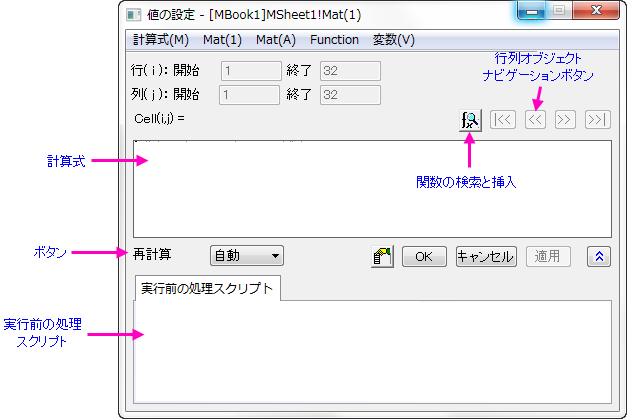
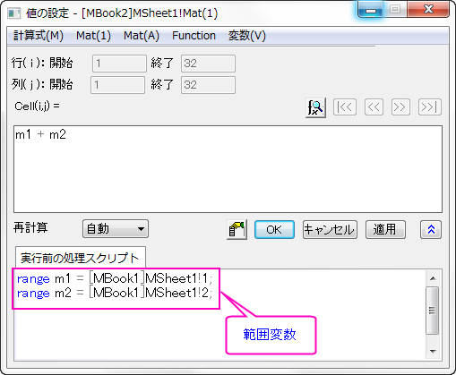
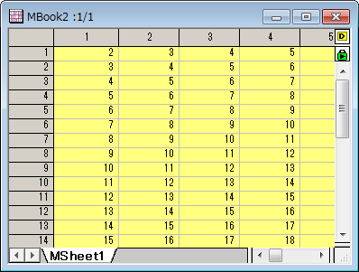

「値の設定」ダイアログボックスに数式を入力する
数式の基本
値の設定ダイアログで使われる計算式は、LabTalkのロジックに従います。計算式には、算術演算、範囲(range)変数、組込のLabTalk関数、ユーザ定義関数 などを含めることができます。数式を定義する場所が2ケ所あります。
- 計算式1行の数式のみここに入力できます。数式の右側を入力します。
Cell(i,j) = c1*sin(i) + c2*cos(j).
- Before Formula Scripts.複数行のLabTalkスクリプトをここに入力でき、これは計算式編集ボックスにある計算式を使って列の値がセットされる前に実行されます。
- 
 |
- Originは、関数メニューに数多くの組み込み関数を用意しており、これらを計算式で利用することができます。また、自分でユーザ定義関数を作成することもできます。
- 文字iとjはシステム変数で、現在の行インデックスと列インデックスを保持しています。文字xとyは現在のXYの値を表します。計算式編集ボックスにこれらを使うことができます。
|
計算式にのみ数式を追加する
計算式に1行の数式を入力して、実行前の処理スクリプトを空白にしておくことができます。計算式編集ボックスの数式には、組み込み関数またはユーザ定義関数を含めることができます。次は、これらの関数をどのように使用するかを示すサンプルです。
サンプル 1
- 新しい行列を作成します。行列の右上角にある アイコンをクリックし、追加を選び、新しい行列オブジェクトを追加します。
- メインメニューから行列：セル値の設定を選択し、値の設定ダイアログを開きます。そして、計算式編集ボックスにiを入力し、適用ボタンをクリックしてデータを生成します。
- ボタンをクリックして、2番目の行列オブジェクトに対しても値をセットします。メニューから関数：数学：Cos(x) を選び、計算式ボックスに cos() を追加します。カーソルは括弧内に配置されます。メニューから Mat(1):Mat(1) を選択します。すると、数式は cos(Mat(1))になります。OK ボタンをクリックして計算式を実行します。
実行前の処理スクリプトにのみ数式を追加する
実行前の処理スクリプト編集ボックスに複数行のLabTalkスクリプトを入力し、計算式を空白にしておくことができます。組み込み関数またはユーザ定義関数だけでなく、LabTalkスクリプトをここで利用することができます。ですので、範囲(range)変数、 文字列変数、loop、LabTalkからアクセス可能なXファンクションを使うことができます。
次のサンプルは、サンプル1と同じ結果になります。
サンプル 2
- 新しい行列を作成します。行列の右上角にある アイコンをクリックし、ショートカットメニューから追加を選び、新しい行列オブジェクトを追加します。
- メインメニューから行列：セル値の設定を選択し、値の設定ダイアログを開きます。そして、計算式編集ボックスにiを入力し、適用ボタンをクリックしてデータを生成します。
- ボタンをクリックして、2番目の行列オブジェクトに対しても値をセットします。実行前の処理スクリプトに、Mat(2)=cos(Mat(1))と入力し、OKボタンをクリックして、データを生成します。
計算式と実行前の処理スクリプトの両方に数式を追加します。
計算式と実行前の処理スクリプトの両方にスクリプトを入力する必要が時々あります。例えば、実行前の処理スクリプトで範囲変数を定義し、それを計算式で使用するような場合です。
サンプル 3
- 新しいプロジェクトを作成します。
- MBook1という名前の新しい行列を作成します。行列の右上角にある アイコンをクリックし、ショートカットメニューから追加を選び、新しい行列オブジェクトを追加します。そこにいくつか数値を入力し、それを後で使用します。
- MBook1を選択します。右クリックしてショートカットメニューから値の設定を選びます。そして、計算式編集ボックスに i を入力します。適用ボタンをクリックして、データを生成します。
- ボタンをクリックして、2番目の行列オブジェクトに対しても値をセットします。計算式編集ボックスに j を入力します。OK ボタンをクリックし、データを生成します。
- 別の行列を作成します。MBook2という名前になっているはずです。
- MBook2の左上にある灰色の空セルを右クリックして、行列のセル値の設定を選択して値の設定ダイアログを開きます。実行前の処理スクリプトでMbook1の2つの行列オブジェクトを参照する2つの範囲変数を定義し、下図のように計算式編集ボックスでそれらを使います。
- 
- OK ボタンをクリックし、MBook2のデータを生成します。結果は次のようになります。
- 